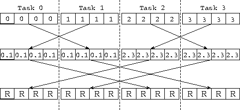
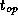
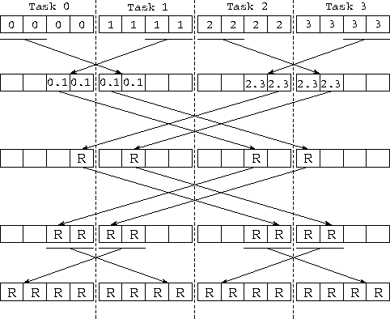

![[DBPP]](pictures//asm_color_tiny.gif)


![[Search]](pictures//search_motif.gif)
Recall that in Section 2.4.1 we developed a parallel
algorithm to sum P
values distributed among P
tasks. This
algorithm is essentially Algorithm 11.1 with an addition
operator used as OP. That is, the algorithm maintains a partial
sum as the local state in each node, and in each step
accumulates a partial sum received from another node into this partial
sum. After  steps, the sum of the P
input values is
available in every node.
steps, the sum of the P
input values is
available in every node.
This same algorithm can be used to perform a reduction using any commutative associative operator, such as multiplication or maximum; the commutative associative operator is used as OP in Algorithm 11.1. The algorithm can also be used to implement a barrier operation, which synchronizes the tasks that execute it. In this case, the values communicated are simply null tokens, and the operation performed on each pair of incoming messages is a synchronization operation that waits for the two tokens to be available.

Figure 11.1: Using the hypercube algorithm to reduce four vectors
of length N=4 distributed among four tasks. The computation is
performed in steps, with each task in each step exchanging
N data values with a neighbor and performing N combine operations.
The labels in the boxes denote the origin of the values that they
contain; hence, 0.1 and 2.3 represent intermediate results
obtained when contributions from task 0 and 1, or 2 and 3, are
combined. R represents the final reduced
values.
In the related vector reduction
problem, each of
P
tasks supplies a vector of N
values and N
separate
reductions are performed to produce a vector of N
results. As
illustrated in Figure 11.1, these N
reductions can
be achieved in  steps by using Algorithm 11.1.
The operator OP is defined as follows: take two vectors of
N
values as input and apply the commutative associative operator
N
times to produce a vector of N
results. The
per-processor cost of this simple exchange
algorithm is
steps by using Algorithm 11.1.
The operator OP is defined as follows: take two vectors of
N
values as input and apply the commutative associative operator
N
times to produce a vector of N
results. The
per-processor cost of this simple exchange
algorithm is
where  is the cost of applying the reduction operator. This algorithm is efficient for small N , when message startup costs dominate. However, for larger N it is inefficient, since it performs many redundant operations.
An alternative recursive halving algorithm utilizes the same hypercube communication structure but applies a divide-and-conquer technique to reduce message volume (Figure 11.2). In effect, Algorithm 11.1 is applied twice. In the reduction phase, each processor communicates (and combines) N/2 data in the first stage, half as much ( N/4 ) in the second, and so on, so that each processor communicates a total of N(P-1)/P data in steps. The global sum is then complete, and the vector of N reduced values is evenly distributed over the P processors. This process is reversed (without the reductions) to broadcast the result. Communication cost is

Figure 11.2: Using the recursive halving algorithm to reduce four vectors
of length N=4 distributed over four tasks. In the first
stages, values are combined to compute the N reduced values,
represented as R; these values are distributed over the four
tasks. In the third and fourth stages, the process is reversed in
order to broadcast the values.
The recursive halving algorithm sends twice as many messages as the simpler algorithm does, but less data. It also performs less computation. Hence it will be more efficient for certain values of N and P and on certain machines. A robust hybrid algorithm can be designed that starts with the recursive halving approach and switches to an exchange algorithm after a certain number of stages so as to avoid some of the broadcast communication.
We can use similar techniques to define an efficient vector broadcast algorithm. Here, the problem is to replicate N values located in a single task (the ``root'') in each of P-1 other tasks. A simple algorithm uses the binary tree communication structure illustrated in Figure 2.8. The root task first sends the data to two other tasks; each of these tasks forwards the data to two other tasks, and so on, until the data are completely distributed. Total cost is approximately
This algorithm is efficient for small N and P . For larger problems and processor configurations, it has the disadvantage that most processors are idle most of the time and the total time is dominated by the term. In these situations, it can be more efficient to break the message into pieces and then to route these pieces separately by using the hypercube communication structure. Communication costs are then approximately as follows (the chapter notes provide pointers to descriptions of this algorithm):
© Copyright 1995 by Ian Foster